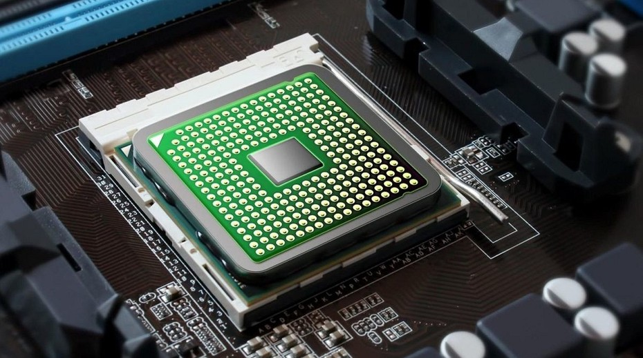

Процессор — это сердце/мозг любого компьютера. Отвечает за математические вычисления и обработку команд. Основными параметрами процессора являются:
Тип сокета — разъема для установки процессора на материнской плате. Как правило, тип сокета характеризуется количеством ножек и производителем процессора. Разные сокеты соответствуют разным типам процессоров.
Количество ядер — Число ядер в процессоре.Современные микроархитектуры процессоров позволяют размещать в одном корпусе сразу несколько вычислительных ядер. Количество ядер напрямую влияет на производительность системы, но необходимо учитывать что не всё программное обеспечение может задействовать все доступные ядра.
Частота процессора — Тактовая частота процессора.
Тактовая частота — это количество тактов (операций) процессора в секунду. Тактовая частота процессора пропорциональна частоте шины (FSB, см. "Частота шины"). Как правило, чем выше тактовая частота процессора, тем выше его производительность. Но подобное сравнение уместно только для моделей одной линейки, поскольку, помимо частоты, на производительность процессора влияют такие параметры, как размер кэша второго уровня (L2), наличие и частота кэша третьего уровня (L3), наличие специальных инструкций и другие.
Интегрированное графическое ядро.Графическое ядро процессора представляет собой дополнительное ядро, занимающееся исключительно графическими вычислениями. Графическое ядро выполняет функции, аналогичные функциям полноценных видеокарт, но зачастую по своим характеристикам уступает им. Однако наличие в процессоре интегрированного графического ядра помогает снизить нагрузку на графический чипсет или видеокарту, и увеличивает производительность ПК.
Тепловыделение(TDP) — это мощность, которую должна отводить система охлаждения, чтобы обеспечить нормальную работу процессора. Чем больше значение этого параметра, тем сильнее греется процессор при работе.
Этот показатель важен для оверклокеров: процессор с низким тепловыделением легче охлаждать, и, соответственно, его можно сильнее разогнать.
Однако следует обратить внимание, что производители процессоров по разному измеряют тепловыделение, поэтому их сравнение корректно только в рамках одного производителя